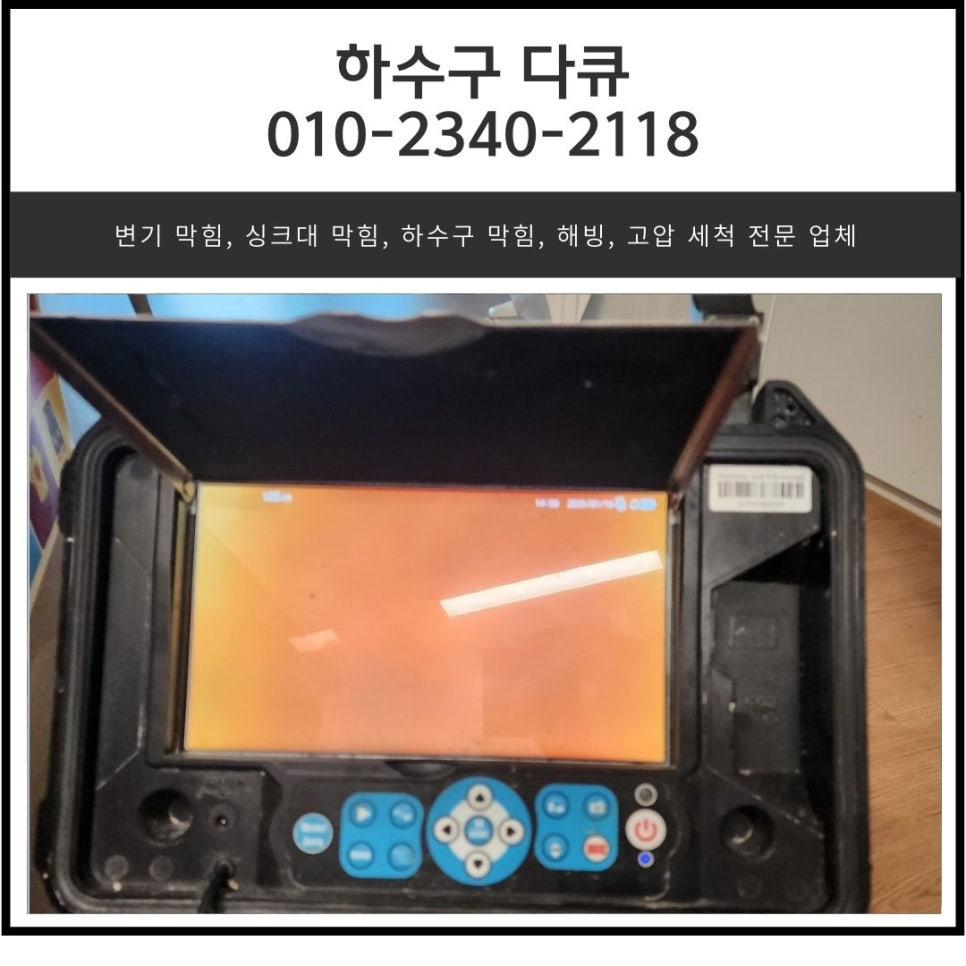
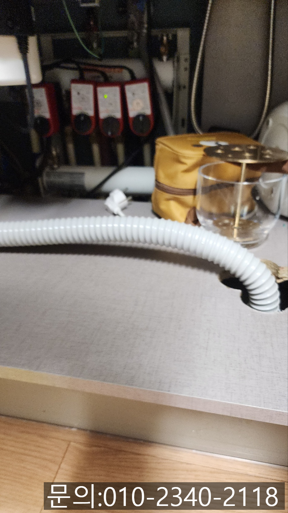
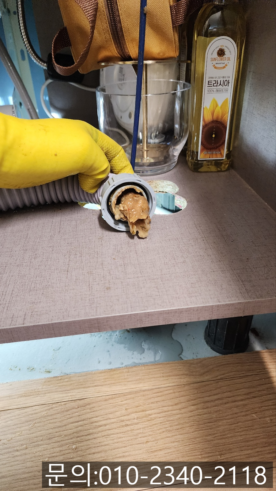
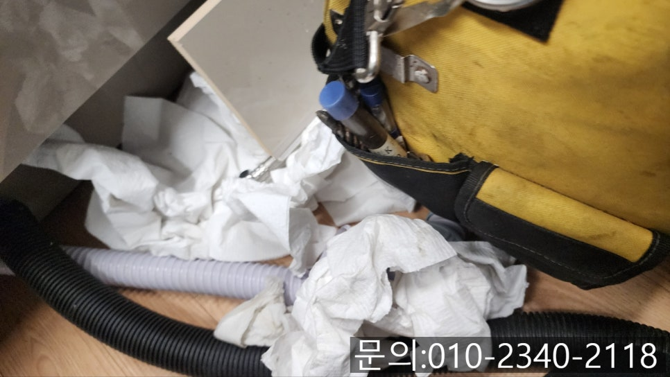
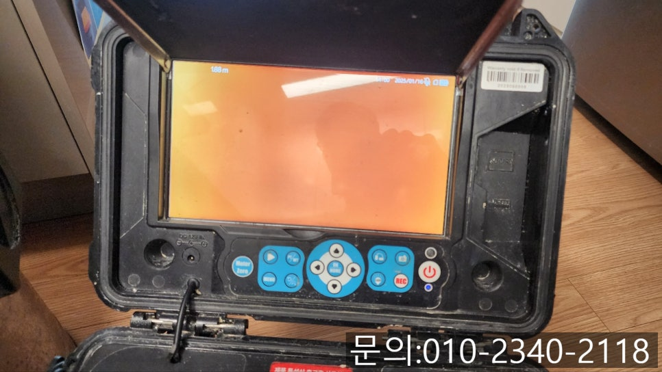
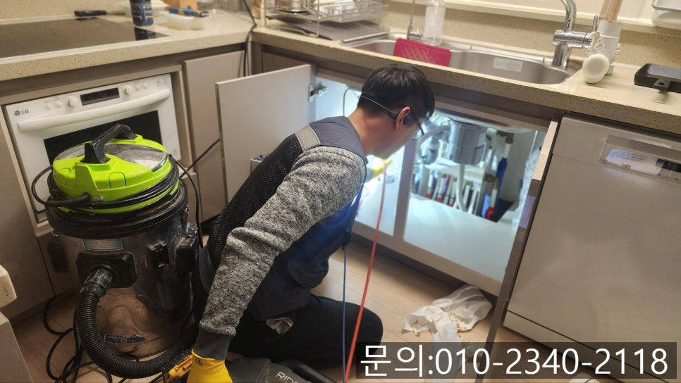
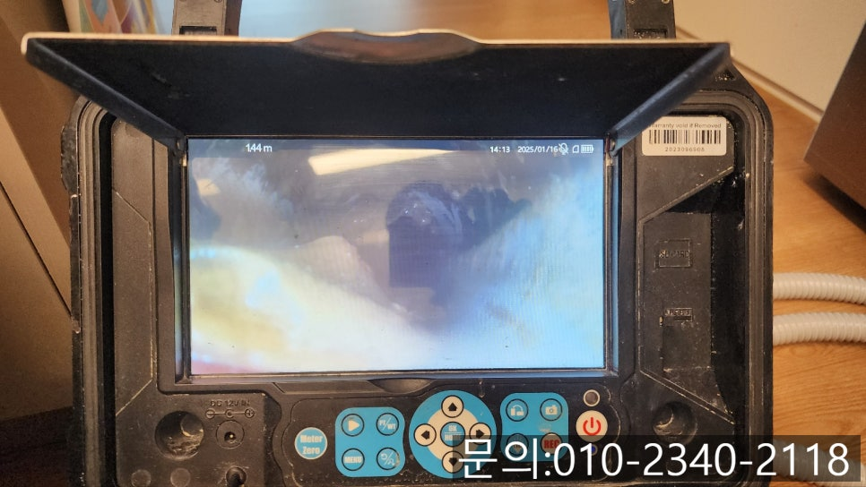

🏠 누읍동 싱크대 막힘 오산 고현동 하수구 넘침 역류 뚫어주는 업체
오산 기흥 싱크대막힘 전문 시공 후기

📋 작업 개요
- 위치: 오산 기흥, 기흥, 오산
- 서비스 유형: 싱크대막힘, 하수구막힘, 배관막힘, 역류해결, 뚫는업체
- 작업 일시: 2025. 1. 18. 12:20
- 업체명: 하수구수사대 (010-5615-2118)
🔍 문제 상황
안녕하세요.
누읍동 싱크대 막힘, 오산 고현동 하수구 넘침, 역류 뚫어주는 업체 하수구 다큐입니다.
매일 사용하고 있는 주방의 싱크대에 문제가 생겨, 누읍동 싱크대 막힘이 발생하게 되면 배관을 타고 악취가 올라와 인상을 찌푸리게 합니다.
오늘 소개해 드릴 누읍동 싱크대 막힘 현장 역시 싱크대에서 사용한 물이 흘러내려가지 않음과 동시에 주방에서 풍기는 하수구 악취로 인해 연락을 주셔서 다녀온 현장입니다.
누읍동 싱크대 막힘으로 연락 주신 고객님의 경우 처음 겪어보는 하수구 막힘으로 인해 당황하셨지만 오산 고현동 하수구 넘침, 역류 뚫어주는 업체를 네이버 블로그로 꼼꼼하게 찾아보시고 하수구 다큐로 연락을 주셨다고 말씀해 주셨어요.
오산 고현동 하수구 넘침, 역류 뚫어주는 업체 하수구 다큐는 직접 다녀온 현장을 많은 분들이 보시고 도움받으실 수 있도록 기록해두고 있는데요.

🔎 원인 분석
💡 전문가 진단: 정밀 진단 장비를 사용하여 슬러지의 고착 여부를 판명하고 타격/세척 작업을 실시했습니다.
오산 고현동 하수구 넘침, 역류 뚫어주는 업체 하수구 다큐는 블로그를 보고 연락 주셨다는 고객님들을 만나면 기분이 좋아집니다.
고객님께 주소를 받아 신속하게 현장으로 출발했는데요.
현장에 도착해 보니 고객님께서 말씀해 주신 대로 주방 싱크대 쪽에서 하수구 냄새가 진동하고 있었습니다.
예상보다 심각한 악취로 인해 배관 내부에 많은 기름 슬러지가 차 있을 것으로 예상되었지만 정확한 원인 파악을 위해 내시경 카메라를 진입시켜 확인해 보기로 했어요.
싱크대와 하수구를 연결해 주는 주름 배관을 분리해 보니 예상대로 기름 슬러지가 가득했습니다.
내시경 카메라가 배관 안쪽으로 진입해 촬영한 화면이에요.
배관 내부에 기름 슬러지와 각종 이물질로 인해 가득 차 있는 상태로 카메라 화면이 누렇게만 보입니다.

🔧 작업 과정
기름 슬러지의 경우 싱크대를 사용하면서 발생하는 음식물 찌꺼기나 프라이팬에 묻어있던 기름 등이 물과 함께 배관을 지나가면서 조금씩 쌓여서 물의 흐름을 방해하고 오랜 시간 많이 쌓이게 되면 완전히 막혀 오산 고현동 하수구 넘침, 역류까지 발생하게 됩니다.
고객님께 내시경 카메라로 촬영한 배관 내부의 모습을 확인 시켜드리고 설명해 드린 다음 작업을 진행하기로 했습니다.
오산 고현동 하수구 넘침, 역류 뚫어주는 업체 하수구 다큐가 이번 현장에서 사용한 장비는 플렉스 샤프트에요.
플렉스 샤프트 장비는 노즐 끝에 달려있는 노커체인이 내시경 카메라와 마찬가지로 배관 내부로 진입한 다음 본체에 연결한 전동드릴의 강하고 빠르게 회전하는 힘을 전달받아 배관 내부에서 360도로 회전하면서 배관을 막고 있는 기름 슬러지를 잘게 부서 주는 작업을 진행하게 됩니다.
진흙처럼 찐득한 기름 슬러지의 경우에는 배관에서 떨어트려주는 역할을 해줘요.
잘게 부서지거나, 배관 내벽에서 떨어져 나온 기름 슬러지는 강력한 흡입력을 자랑하는 석션을 사용해 빨아드려 배관에서 완벽하게 제거하는 작업을 하게 됩니다.
몇 차례 작업을 한 뒤 내시경으로 확인해 보니 통수가 되면서 배관 내부의 모습을 확인할 수 있었는데요.
많은 양의 기름 슬러지가 제거되었지만 잔여 이물질이 남아있어 내시경 카메라로 살펴보며 계속해서 작업을 진행했습니다.
한참을 반복해서 작업하자 처음 내시경 카메라로 확인했던 배관과는 180도 달라진 깨끗해진 내부를 확인할 수 있었어요.
마지막으로 분리했던 주름 배관을 다시 연결해 드린 다음 많은 양의 물을 쏟아부어 배관에 다른 문제는 없는지 꼼꼼하게 살펴본 다음 아무런 문제가 없는 것까지 확인하고 작업을 마무리할 수 있었습니다.
싱크대 막힘은 언제, 어디서든 발생할 수 있는 문제입니다.


✅ 작업 완료
지금 싱크대 막힘으로 고민하고 계신다면 연락 주세요.
완벽하게 해결해 드리겠습니다.
경기도 용인시 기흥구 동백중앙로 191 8층 c8736호




⚠️ 주방 싱크대 배관 막힘 예방 수칙
- ✅ 기름기가 묻은 식기나 프라이팬은 설거지 전 키친타올로 반드시 기름때를 닦아내세요.
- ✅ 주기적으로 싱크대 개수대에 뜨거운 물을 가득 받아 한 번에 내려 배관 내부 기름을 씻어내세요.
- ✅ 배수구 거름망을 미세한 필터로 사용하시고 음식물 찌꺼기가 틈으로 새어 들지 않게 관리하세요.
- ✅ 베이킹소다와 식초를 뜨거운 물과 함께 일주일에 한 번씩 부어주면 배관 살균과 막힘 예방에 좋습니다.
💡 핵심 정리
- 확실한 장비 작업(내시경 점검 및 샤프트 스케일링)으로 원인을 뿌리 뽑습니다.
- 작업 후 1년 이내에 동일한 부위 재발 시 100% 무상 A/S 서비스를 보장합니다.
- 서울 · 경기 · 인천 전 지역에 24시간 언제든 긴급 출동할 수 있도록 항시 대기 중입니다.
❓ 자주 묻는 질문 (FAQ)
🚨 오산 기흥 싱크대막힘 문제로 고민이신가요?
정확한 원인 진단과 확실한 시공으로 재발 없는 해결을 약속드립니다.
24시간 긴급 출동 | 서울 · 경기 · 인천 전지역 | 1년 내 재발 시 무상 A/S